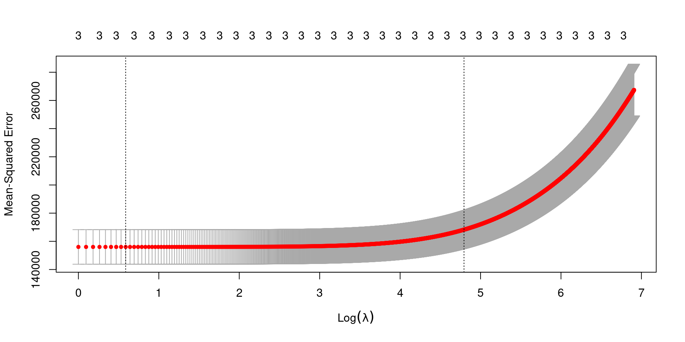
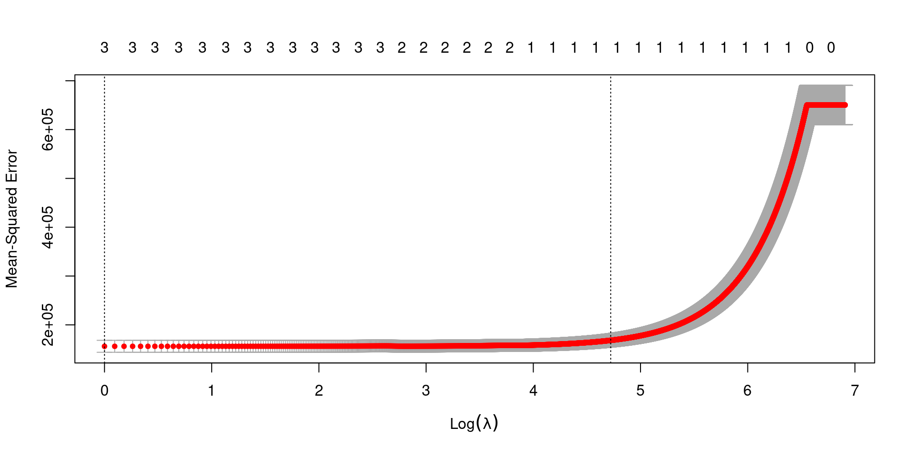

cv.glmnet(x, # predictor matrix
y, # response variable
alpha, # Ridge
lambda, # Use a vector of lambdas
nfolds) # Number folds, use size of data for LOOCVResampling Methods
Learning Outcomes
Cross-Validation
Leave-one-out
K-Fold
Bootstrap Methods
Training Error Rate
Training Error Rate is the error rate of the data used to create the model of interest. It describes how well the model predicts the data used to construct it.
Test Error Rate
Test Error Rate is the error rate of predicting a new data point using the current established model.
Test Error Rate
In order to obtain the test error rate, data not used to fit the model must be available
This is not the case the majority of time.
New methods have been developed to compute the test error rate using the existing data.
Cross-Validation
Cross-Validation
A cross-validation approach is to obtain a good estimate of the error-rate of a machine learning algorithm. We split the data set into two categories: training and testing. The training data set is used to train the model, and the test data is used to test the model and compute the error rate.
Tuning Parameter
A cross-validation approach is great when there is a tuning parameter. We can fit a model for different values of the tuning parameter, and we can choose which value results in the lowest error rate.
Training and Testing Data
The training and testing data sets are constructed by randomly assigning data points to one type of data.
LOOCV Cross-Validation
Choose a set of tuning parameters to test.
For each \(k\)th turning parameter, calculate the tuning parameter error for each value
Utilize the leave-one-out approach
For each observation fit a model with the remaining observations and fit the excluded value
Compute the following error:
\[ CVE_k = \frac{1}{n}\sum^n_{i=1}e_i \]
Identify the \(k\)th tuning parameter with the lowest \(CVE_k\)
K-Fold Cross-Validation
Choose a set of tuning parameters to test.
Create different K subsets of the data.
For each \(j\)th turning parameter Calculate the tuning parameter error for each value
For each K subset, fit a model using the data excluding the Kth subset
Predict the values in the Kth subset using the fitted model
Repeat the process for each K subset
Compute the following error:
\[ CVE_j = \frac{1}{n}\sum^n_{i=1}e_i \]
Identify the \(j\)th tuning parameter with the lowest \(CVE_j\)
Executing in R
Several R Packages have developed methods to execute the a cross-validation approach.
CV in glmnet
Example - Ridge Regression
library(glmnet)
library(tidyverse)
library(palmerpenguins)
penguins <- penguins |> drop_na()
mod <- penguins |> model.matrix(~ flipper_length_mm + bill_depth_mm + bill_length_mm - 1,
data = _) # Must include -1 to remove intercept, needed for glmnet
lambdas <- seq(1,1000, by = 0.1)ridge_mod_cv <- cv.glmnet(x = mod,
y = penguins$body_mass_g,
alpha = 0,
lambda = lambdas,
nfolds = 333)plot(ridge_mod_cv)
ridge_mod_cv$lambda.min#> [1] 1.8ridge_mod <- glmnet(x = mod,
y = penguins$body_mass_g,
alpha = 0,
lambda = 1.8)
coef(ridge_mod)[,1]#> (Intercept) flipper_length_mm bill_depth_mm bill_length_mm
#> -6384.278567 50.452983 16.803642 3.716981Example - LASSO
library(glmnet)
library(tidyverse)
library(palmerpenguins)
penguins <- penguins |> drop_na()
mod <- penguins |> model.matrix(~ flipper_length_mm + bill_depth_mm + bill_length_mm - 1,
data = _) # Must include -1 to remove intercept, needed for glmnet
lambdas <- seq(1,1000, by = 0.1)ridge_mod_cv <- cv.glmnet(x = mod,
y = penguins$body_mass_g,
alpha = 1,
lambda = lambdas,
nfolds = 333)plot(ridge_mod_cv)
ridge_mod_cv$lambda.min#> [1] 1ridge_mod <- glmnet(x = mod,
y = penguins$body_mass_g,
alpha = 1,
lambda = 1)
coef(ridge_mod)[,1]#> (Intercept) flipper_length_mm bill_depth_mm bill_length_mm
#> -6388.713373 50.581044 16.602520 3.311258Try with mtcars
Complete a LASSO approach using mtcars to predict mpg from the remaining variables.
Bootstrap Methods
Bootstrap Methods
Bootstrapping methods are used when we cannot theoretically compute the standard errors. Bootstrap methods are computationally intensive but will compute accurate standard errors.
When all else fails, a bootstrap approach will compute accurate standard errors.
Bootstrap Algorithm
- Draw a sample \(X*\) of size \(n\) with replacement from the original data \(X\).
- \(n\) is the size of the data
- Compute the bootstrap replicate statistic \(T* = g(X*)\), where \(g(\cdot)\) is the function that computes the statistic of interest.
- Repeat steps 1-2 \(B\) times to obtain \(B\) bootstrap replicates \({T*_1, T*_2, ..., T*_B}\).
- The computed statistics from \(B\) samples are the empirical bootstrap distribution of the statistic, \(g(X)\).
- Calculate the bootstrap standard error of the statistic, \(se_b(g(X))\), as the standard deviation of the bootstrap replicates.
- Calculate the bootstrap confidence interval for the statistic, \(CI(g(X))\), with the \(\alpha\) and \((1-\alpha)%\) percentiles of the bootstrap replicates, where \(\alpha\) is the desired level of significance.
Examples
Fitting the following model:
library(palmerpenguins)
library(tidyverse)
penguins <- penguins |> drop_na()
penguins |> lm(body_mass_g ~ flipper_length_mm + bill_length_mm + bill_depth_mm,
data = _)#>
#> Call:
#> lm(formula = body_mass_g ~ flipper_length_mm + bill_length_mm +
#> bill_depth_mm, data = penguins)
#>
#> Coefficients:
#> (Intercept) flipper_length_mm bill_length_mm bill_depth_mm
#> -6445.476 50.762 3.293 17.836Obtain the Bootstrap-based Standard Errors for the regression coefficients. Use \(B=1000\) bootstrap samples.